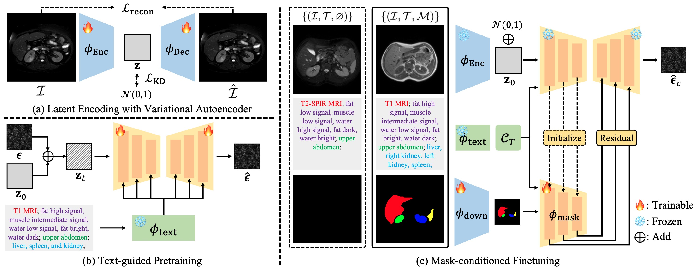
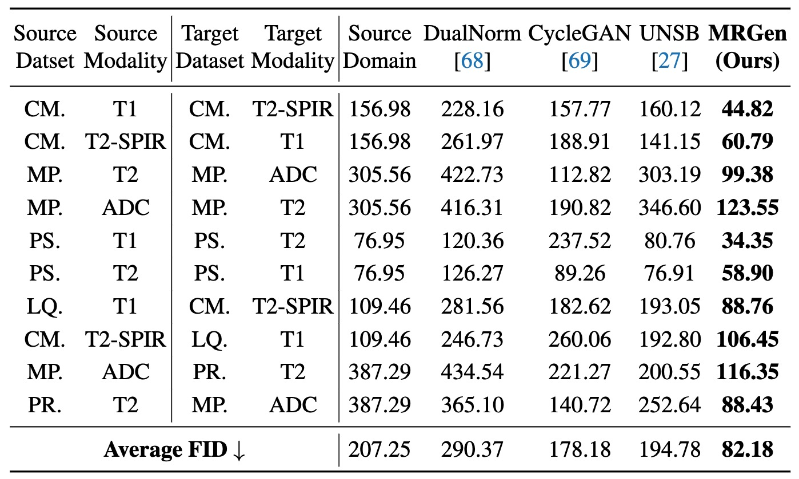
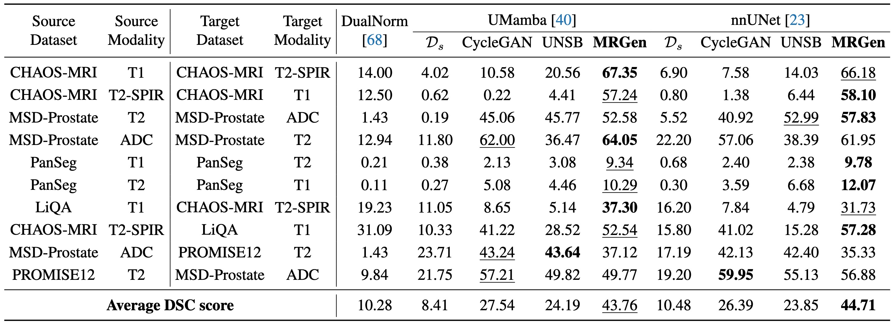
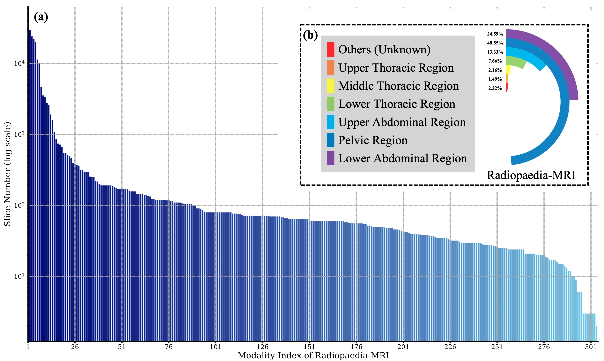

MRGen
Segmentation Data Engine for Underrepresented MRI Modalities
|
1School of Artificial Intelligence, Shanghai Jiao Tong
University
|
|
2Shanghai Artificial Intelligence Laboratory
|

Motivation and Overview.
Left: The heterogeneity of MRI modalities challenges the generalization of segmentation models.
Our proposed data engine, MRGen, overcomes this by controllably synthesizing training data for segmentation models.
Right: (a) Prior generative models are restricted to
Previous generative models rely on mask-annotated data and are data augmentation for well-annotated modalities;
(b) Image translation typically requires registered data pairs (dashed lines), and is limited to specific modality conversions;
(c) MRGen enables controllable generation across diverse modalities, creating data for training segmentation models towards underrepresented modalities.
Distinct colors represent different modalities.
Abstract
Training medical image segmentation models for rare yet clinically significant imaging modalities is challenging due to the scarcity of annotated data,
and manual mask annotations can be costly and labor-intensive to acquire.
This paper investigates leveraging generative models to synthesize training data, to train segmentation models for underrepresented modalities,
particularly on annotation-scarce MRI.
Concretely, our contributions are threefold:
(i) we introduce MRGen-DB, a large-scale radiology image-text dataset comprising extensive samples with rich metadata, including modality labels, attributes, regions,
and organs information, with a subset having pixelwise mask annotations;
(ii) we present MRGen, a diffusion-based data engine for controllable medical image synthesis, conditioned on text prompts and segmentation masks.
MRGen can generate realistic images for diverse MRI modalities lacking mask annotations, facilitating segmentation training in low-source domains;
(iii) extensive experiments across multiple modalities demonstrate that MRGen significantly improves segmentation performance on unannotated modalities by providing high-quality synthetic data.
We believe that our method bridges a critical gap in medical image analysis, extending segmentation capabilities to scenarios that are challenging to acquire manual annotations.
MRGen Architecture

Architecture Overview.
Developing our MRGen involves three key steps:
(a) Train an autoencoder on various images from MRGen-DB dataset;
(b) Train a text-guided generative model within the latent space, using image-text pairs across diverse modalities from MRGen-DB,
featuring modality, attributes,
region, and organs information;
(c) Train a mask condition controller jointly on image-text pairs with
and without mask annotations, enabling controllable generation based on both text prompts and masks.
Results
Quantitative Results

Quantitative Results (FID) on Generation.
Here, CM., MP., PS., LQ., and PR., denote CHAOS-MRI, MSD-Prostate, PanSeg, LiQA, and PROMISE12, respectively.

Quantitative Results (DSC score) on Segmentation.
Here, Dsdenotes training with manually annotated source-domain data.
Results with the best and second best results are bolded and underlined, respectively.
Qualitative Results

Qualitative Results of Controllable Generation.
We present images from the source domain ùíüs and the
target domain ùíüt for reference.
Here, liver, right kidney,
left kidney, spleen, prostate,
and pancreas, are contoured with different colors.
Qualitative Results of Segmentation towards Unannotated Modalities.
Significant imaging differences between source-domain (ùíüs)
and target-domain (ùíüt) make segmentation on
target domains (ùíüt) extremely challenging.
We visualize liver, right kidney, left kidney, and spleen in the first two rows,
prostate in the third row,
and pancreas in the fourth row with distinct colors.
Data Statistics

Data Statistics of Radiopaedia-MRI.
(a) Distribution of slice counts across various modalities in Radiopaedia-MRI;
(b) Proportional distribution of slices across different regions in Radiopaedia-MRI.
Details of Segmentation-annotated Datasets in MRGen-DB.
Here, # Vol. represents the number of 3D Volumes, # Slc. denotes the number of 2D slices, and # Slc. w/ mask indicates the number of 2D slices with mask annotations.
More Visualization
More Qualitative Results of Controllable Generation.
We present images from source domains (ùíüs)
and target domains (ùíüt) for reference.
Here, specific organs are contoured with colors: prostate in
MSD-Prostate and PROMISE12 datasets, and pancreas in PanSeg dataset, and liver in LiQA and CHAOS-MRI datasets.
More Qualitative Results on Segmentation towards Unannotated Modalities.
Significant imaging differences between source-domain (ùíüs),
and target-domain (ùíüt),
make segmentation on target domains (ùíüt) extremely challenging.
Here, specific organs are highlighted with colors: prostate in
MSD-Prostate and PROMISE12 datasets, and pancreas in PanSeg dataset, and liver in LiQA and CHAOS-MRI datasets.
Welcome to check out our paper for more technical details and results!
Acknowledgements
Based on a template by Phillip Isola and Richard Zhang.